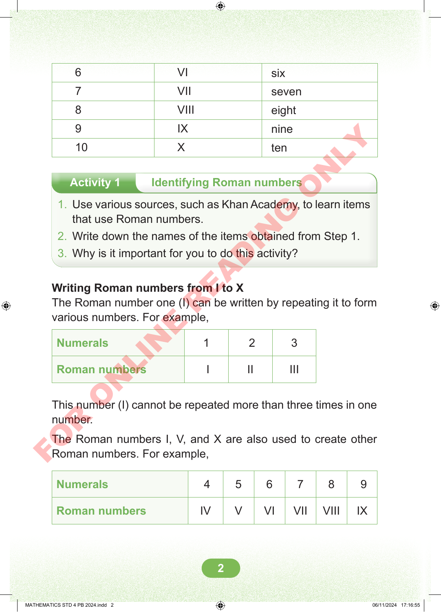
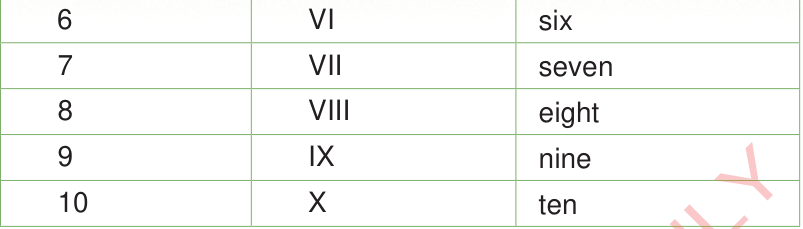

Activity 1
Identifying Roman numbers
- 1. Use various sources, such as Khan Academy, to learn items that use Roman numbers.
- 2. Write down the names of the items obtained from Step 1.
- 3. Why is it important for you to do this activity?
6 VI six
7 VII seven
8 VIII eight
9 IX nine
10 X ten
Writing Roman numbers from I to X
The Roman number one (I) can be written by repeating it to form various numbers. For example,
| Numerals | 1 | 2 | 3 |
| Roman numbers | I | II | III |
This number (I) cannot be repeated more than three times in one number.
The Roman numbers I, V, and X are also used to create other Roman numbers. For example,
| Numerals | 4 | 5 | 6 | 7 | 8 | 9 |
| Roman numbers | IV | V | VI | VII | VIII | IX |